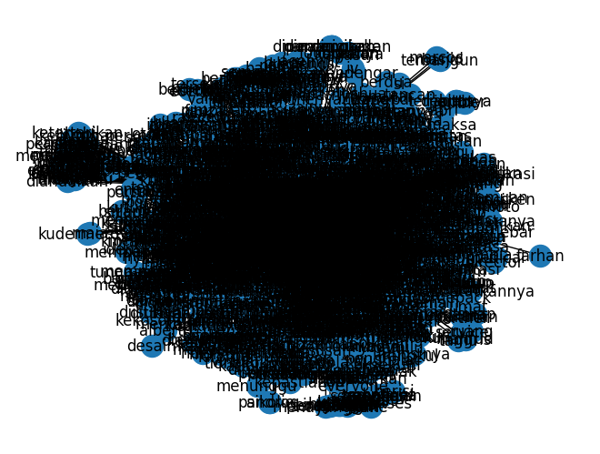

import pandas as pd
import numpy as np
from itertools import combinations
import networkx as nx
import matplotlib.pyplot as plt
data = pd.read_csv("/content/drive/MyDrive/ppw/tugas/data_tugas4/df_ringkasan.csv")
data
---------------------------------------------------------------------------
FileNotFoundError Traceback (most recent call last)
<ipython-input-2-bc52893bba5e> in <cell line: 1>()
----> 1 data = pd.read_csv("/content/drive/MyDrive/ppw/tugas/data_tugas4/df_ringkasan.csv")
2 data
/usr/local/lib/python3.10/dist-packages/pandas/util/_decorators.py in wrapper(*args, **kwargs)
209 else:
210 kwargs[new_arg_name] = new_arg_value
--> 211 return func(*args, **kwargs)
212
213 return cast(F, wrapper)
/usr/local/lib/python3.10/dist-packages/pandas/util/_decorators.py in wrapper(*args, **kwargs)
329 stacklevel=find_stack_level(),
330 )
--> 331 return func(*args, **kwargs)
332
333 # error: "Callable[[VarArg(Any), KwArg(Any)], Any]" has no
/usr/local/lib/python3.10/dist-packages/pandas/io/parsers/readers.py in read_csv(filepath_or_buffer, sep, delimiter, header, names, index_col, usecols, squeeze, prefix, mangle_dupe_cols, dtype, engine, converters, true_values, false_values, skipinitialspace, skiprows, skipfooter, nrows, na_values, keep_default_na, na_filter, verbose, skip_blank_lines, parse_dates, infer_datetime_format, keep_date_col, date_parser, dayfirst, cache_dates, iterator, chunksize, compression, thousands, decimal, lineterminator, quotechar, quoting, doublequote, escapechar, comment, encoding, encoding_errors, dialect, error_bad_lines, warn_bad_lines, on_bad_lines, delim_whitespace, low_memory, memory_map, float_precision, storage_options)
948 kwds.update(kwds_defaults)
949
--> 950 return _read(filepath_or_buffer, kwds)
951
952
/usr/local/lib/python3.10/dist-packages/pandas/io/parsers/readers.py in _read(filepath_or_buffer, kwds)
603
604 # Create the parser.
--> 605 parser = TextFileReader(filepath_or_buffer, **kwds)
606
607 if chunksize or iterator:
/usr/local/lib/python3.10/dist-packages/pandas/io/parsers/readers.py in __init__(self, f, engine, **kwds)
1440
1441 self.handles: IOHandles | None = None
-> 1442 self._engine = self._make_engine(f, self.engine)
1443
1444 def close(self) -> None:
/usr/local/lib/python3.10/dist-packages/pandas/io/parsers/readers.py in _make_engine(self, f, engine)
1733 if "b" not in mode:
1734 mode += "b"
-> 1735 self.handles = get_handle(
1736 f,
1737 mode,
/usr/local/lib/python3.10/dist-packages/pandas/io/common.py in get_handle(path_or_buf, mode, encoding, compression, memory_map, is_text, errors, storage_options)
854 if ioargs.encoding and "b" not in ioargs.mode:
855 # Encoding
--> 856 handle = open(
857 handle,
858 ioargs.mode,
FileNotFoundError: [Errno 2] No such file or directory: '/content/drive/MyDrive/ppw/tugas/data_tugas4/df_ringkasan.csv'
Pre Processing#
import nltk
import pandas as pd
from sklearn.feature_extraction.text import CountVectorizer
import numpy as np
import re
import networkx as nx
from nltk.tokenize import word_tokenize
from nltk.corpus import stopwords
nltk.download('stopwords')
nltk.download('punkt')
[nltk_data] Downloading package stopwords to /root/nltk_data...
[nltk_data] Package stopwords is already up-to-date!
[nltk_data] Downloading package punkt to /root/nltk_data...
[nltk_data] Package punkt is already up-to-date!
True
#Remove Puncutuation
clean_symbol = re.compile('[^a-zA-Z\s]')
def clean_punct(text):
text = clean_symbol.sub(' ', text).lower()
return text
# Buat kolom tambahan untuk data description yang telah diremovepunctuation
preprocessing = data['Ringkasan'].apply(clean_punct)
clean=pd.DataFrame(preprocessing)
clean
| Ringkasan | |
|---|---|
| 0 | asapi francesco bagnaia di motogp jepang ... |
| 1 | eko yuli irawan mengucapkan permintaan maafnya... |
| 2 | motegi marc marquez girang setelah bisa naik... |
| 3 | klasemen sementara perolehan medali asian game... |
| 4 | hasil asian games akan dibahas di sini t... |
| ... | ... |
| 987 | jakarta segini besaran uang makan dan uang l... |
| 988 | jakarta aturan rancangan peraturan pemerinta... |
| 989 | jakarta menteri pertanian amran sulaiman men... |
| 990 | jakarta calon presiden partai perindo ganjar... |
| 991 | jakarta skk migas menyatakan potensi harta k... |
992 rows × 1 columns
Stopword#
# Unduh stop words dari nltk
stop_words = set(stopwords.words('indonesian'))
# Fungsi untuk menghapus stop words dari setiap kalimat
def remove_stopwords(sentence):
words = word_tokenize(sentence)
filtered_words = [word for word in words if word.lower() not in stop_words]
return ' '.join(filtered_words)
# Terapkan fungsi pada kolom 'Kalimat' dalam DataFrame
stopword = clean['Ringkasan'].apply(remove_stopwords)
df=pd.DataFrame(stopword)
df
| Ringkasan | |
|---|---|
| 0 | asapi francesco bagnaia motogp jepang jorge ma... |
| 1 | eko yuli irawan permintaan maafnya gagal sumba... |
| 2 | motegi marc marquez girang podium kalinya musi... |
| 3 | klasemen perolehan medali asian games minggu w... |
| 4 | hasil asian games dibahas timnas basket putri ... |
| ... | ... |
| 987 | jakarta segini besaran uang makan uang lauk pa... |
| 988 | jakarta aturan rancangan peraturan pemerintah ... |
| 989 | jakarta menteri pertanian amran sulaiman salah... |
| 990 | jakarta calon presiden partai perindo ganjar p... |
| 991 | jakarta skk migas potensi harta karun minyak g... |
992 rows × 1 columns
Term Frequency#
# Menghitung matriks co-occurrence dengan CountVectorizer
vectorizer = CountVectorizer()
co_occurrence_matrix = vectorizer.fit_transform(df['Ringkasan']).T * vectorizer.fit_transform(df['Ringkasan'])
# Membuat DataFrame dari matriks co-occurrence
df_co_occurrence = pd.DataFrame(co_occurrence_matrix.toarray(), columns=vectorizer.get_feature_names_out(),index=vectorizer.get_feature_names_out())
df_co_occurrence
| aakarshi | aaron | abad | abadi | abdi | abdul | abdullah | abjad | abolfazl | absen | ... | zhongyi | zhu | zhuhai | zigi | zii | zilberman | zinedine | zion | zona | zu | |
|---|---|---|---|---|---|---|---|---|---|---|---|---|---|---|---|---|---|---|---|---|---|
| aakarshi | 1 | 1 | 0 | 0 | 0 | 0 | 0 | 0 | 0 | 0 | ... | 0 | 0 | 0 | 0 | 0 | 0 | 0 | 0 | 0 | 0 |
| aaron | 1 | 27 | 0 | 0 | 0 | 0 | 0 | 0 | 0 | 0 | ... | 0 | 0 | 0 | 0 | 0 | 0 | 0 | 0 | 0 | 0 |
| abad | 0 | 0 | 1 | 0 | 0 | 0 | 0 | 0 | 0 | 0 | ... | 0 | 0 | 0 | 0 | 0 | 0 | 0 | 0 | 0 | 0 |
| abadi | 0 | 0 | 0 | 7 | 0 | 0 | 0 | 0 | 0 | 0 | ... | 0 | 0 | 0 | 0 | 0 | 0 | 0 | 0 | 0 | 0 |
| abdi | 0 | 0 | 0 | 0 | 64 | 0 | 0 | 0 | 0 | 0 | ... | 0 | 0 | 0 | 0 | 0 | 0 | 0 | 0 | 0 | 0 |
| ... | ... | ... | ... | ... | ... | ... | ... | ... | ... | ... | ... | ... | ... | ... | ... | ... | ... | ... | ... | ... | ... |
| zilberman | 0 | 0 | 0 | 0 | 0 | 0 | 0 | 0 | 0 | 0 | ... | 0 | 0 | 0 | 0 | 0 | 4 | 0 | 0 | 0 | 0 |
| zinedine | 0 | 0 | 0 | 0 | 0 | 0 | 0 | 0 | 0 | 0 | ... | 0 | 0 | 0 | 0 | 0 | 0 | 1 | 0 | 0 | 0 |
| zion | 0 | 0 | 0 | 0 | 0 | 0 | 0 | 0 | 0 | 0 | ... | 0 | 0 | 0 | 0 | 0 | 0 | 0 | 4 | 0 | 0 |
| zona | 0 | 0 | 0 | 0 | 0 | 0 | 0 | 0 | 0 | 0 | ... | 0 | 0 | 0 | 0 | 0 | 0 | 0 | 0 | 2 | 0 |
| zu | 0 | 0 | 0 | 0 | 0 | 0 | 0 | 0 | 0 | 0 | ... | 0 | 0 | 0 | 0 | 0 | 0 | 0 | 0 | 0 | 4 |
5389 rows × 5389 columns
Graph#
G = nx.Graph()
for idx, row in df_co_occurrence.iterrows():
for col in df_co_occurrence.columns:
weight = df_co_occurrence.loc[idx, col]
if weight > 10 and idx != col:
G.add_edge(idx, col, weight=weight)
pr = nx.pagerank(G)
sorted_d = sorted(pr.items(), key=lambda x: x[1], reverse=True)[:3]
sorted_d
[('indonesia', 0.027051385270390638),
('motogp', 0.017423226350825327),
('baca', 0.011401538247205124)]
nx.draw(G,with_labels=True)
